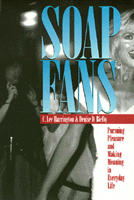

A dispute of the simplistic illusion of soap fans as bored housewives or losers
A dispute of the simplistic illusion of soap fans as bored housewives or losers


 A dispute of the simplistic illusion of soap fans as bored housewives or losers
A dispute of the simplistic illusion of soap fans as bored housewives or losers

|  |
Soap FansPursuing Pleasure and Making Meaning in Everyday LifeC. Lee Harrington and Denise D. Bielbypaper EAN: 978-1-56639-330-0 (ISBN: 1-56639-330-2) |
"A terrific labyrinthine look at the soap-fan culture. Harrington and Bielby cover it all—from the clubs to the crackpots, from today's hip n' sassy internet to the bubble-headed fanzines of yore—and the result is as juicy and compelling as the soaps themselves."
—Michael Logan, TV Guide
Do soap opera fans deserve their reputation as lonely people, hopeless losers, or bored housewives? No, according to C. Lee Harrington and Denise D. Bielby. These authors—soap fans themselves—argue that soap fans are normal individuals who translate their soap watching into a broad range of public and private experience. People who cut across all categories of age, gender, race, ethnicity, income, education, and ideology incorporate a love of the soaps into their day-to-day leisure activities.
Interviews with soap opera viewers, actors, writers, producers, directors, the daytime press, and fan club staff members reveal fascinating details about the inside world of fandom and the multitude of outlets for fan expression—clubs, newsletters, electronic bulletin boards, and public events. Numerous examples illustrate the pleasure fans derive from critiquing characters, speculating on plot twists, and swapping memorabilia.
Examining the experiences that shape fan culture, Harrington and Bielby analyze the narrative structure and various aspects of the production of the soaps. Their examination reveals that the "meaning" of soaps is complex, individualized, and not simply a reflection of the narrative content of the stories. The authors show fans who actively contemplate what it means to be a fan, and who adjust their level of involvement accordingly.
Excerpt available at www.temple.edu/tempress
"A rare combination of scholarship and engrossing readability, Soap Fans offers a fascinating and mostly positive insight into the lives of the misunderstood and often maligned soap opera devotee."
—Mimi Torchin, Editor-in-Chief, Soap Opera Weekly
List of Tables and Illustrations
Acknowledgments
Introduction
1. The Soap Opera Fan World
2. Soap Fans' Subculture
3. Becoming and Being a Fan
4. Entering the Wild Zone
5. Story Struggles and Meaning Making
6. Fandom in Everyday Life
Appendix
Notes
References
Name Index
Subject Index
C. Lee Harrington is Assistant Professor of Sociology at Miami University in Ohio.
Denise D. Bielby is Professor of Sociology at the University of California, Santa Barbara.
General Interest
Mass Media and Communications
Sociology
© 2015 Temple University. All Rights Reserved. This page: http://www.temple.edu/tempress/titles/1042_reg.html.